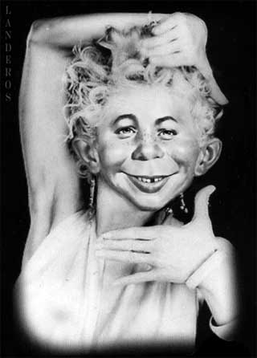

|

Stupid Vogue
Stupid is the key to life itself. Join the masses and embrace it as your own.
- - - - - - - - - -
by Jeffrey A. Tucker
 HE GYM has Fox television on, and perhaps I should be grateful, because otherwise it would not have dawned on me just how popular and widely embraced stupid is. By stupid, I don't really intend insult. Stupid is a mental outlook that affirms the crude and base while eschewing the noble and thoughtful. It is an attitude of mind that can be adopted by both low lights and bright lights. HE GYM has Fox television on, and perhaps I should be grateful, because otherwise it would not have dawned on me just how popular and widely embraced stupid is. By stupid, I don't really intend insult. Stupid is a mental outlook that affirms the crude and base while eschewing the noble and thoughtful. It is an attitude of mind that can be adopted by both low lights and bright lights.
That low lights be can be stupid is not a surprise. It is typified by posters on FreeRepublic, callers to talk radio, the O'Reilly Factor, and College Republicans. Among this crowd, not only is reading in history and libraries not undertaken; it is not encouraged and is even actively discouraged. The thinking goes: Rush doesn't bother with footnotes so why should I?
More puzzling is when stupid is adopted by the bright-light set after its members have come to the conviction that some modes of thought are more useful to achieving socio-political goals than others. Intellectual affectations, long deductive processes, self-control, and abstract ideals are fine in many cases, they conclude, but not as effective for some purposes as base instinct, first thoughts, anger unleashed, and raw emotion.
For intellectuals to believe in stupid means to embrace the attitude that sometimes society thrives best in the absence of serious thought, that stupid is more conducive to revolutionary change in society than carefully pondered ideology. It is about the conclusion that ideas and reflection do far less good for society that screaming insults, and that to live in our times and make a difference requires that we set aside our intellectual pretensions and appreciate anew the things that move the masses.
Thus is stupid in vogue. Without attempting an update of Walter Pitkin's Short Introduction to the History of Human Stupidity (1932), or getting bogged down in a full theoretical treatise, let us explore the how and why smart people decide to embrace stupid.
Stupid Vogue accounts for how it is that otherwise smart people could defend the preposterous propaganda on Fox day after day, the howls of talk radio hosts, the spewing forth of James Taranto in the Wall Street Journal, the blathering lunacies of political activists who consider a criticism of Bush to be the equivalent of treason. Smart people know this is all very stupid and, in their heart of hearts, they are embarrassed by it. But they have concluded that it is pointless to fight it; once must join in the parade of stupid or be left behind.
The intellectuals sometimes admit that they have joined the parade. David Brooks writes: "In an age of conflict, bourgeois virtues like compassion, tolerance, and industriousness are valued less than the classical virtues of courage, steadfastness, and a ruthless desire for victory." That's another way of saying that much good can come from the most brutal (stupid) side of man. To unleash it requires not talk and debate but something, well, ruthless; something, well, stupid.
Stupid Vogue is not just about politics, but it is in the political sphere where it thrives most fully. Consider that most Americans still believe that Saddam had something to do with 9-11. The intellectuals know this belief is mistaken yet they are glad that the myth exists, as a way of justifying the war. It is a lie, to be sure, but an essential one. In this case, stupid has served their essential purposes, just as Bush himself does. How much better for the neoconservatives that Bush is not critically minded but rather goes with his instincts over careful thought? To observe this is to stumble on a profound insight that stupid might not be such a bad thing after all.
This is evidently the lesson right-wing intellectuals have taken from the political experience of our time. You can go to National Review online and click any story about the war. You will find that essential facts and serious moral analysis are edited out and replaced by implausible claims and conclusions barren of thought. These are standard devices. Last week, for example, Victor David Hansen credits Bush's Iraq war for "bringing consensual government into the heart of Middle Eastern autocracy." That's a really stupid way to describe martial law imposed by a foreign military conquering power, and don't think he doesn't know this. To respond to such claims is like trying to prove that the moon is not made of Roquefort. The remark is not designed to elucidate reality but merely to assert something that only the most ignorant person (willfully or not) would accept. It is also to prepare such people believe other outlandish claims no matter how disconnected from reality.
This phenomenon, born of nihilism, can be initially disturbing to well-formed minds. Truly, it can be difficult for very smart people to affect stupid. Let's say you inadvertently hear a news item that points out the US just killed a half a dozen civilians in a foreign land. A government spokesman is dismissive. How do you react? As an intellectual who has read the classics and put some serious time into thinking through a variety of ethical concerns, you might be tempted to reach beyond the propaganda and conclude that this is not a good thing. Some people have lost their lives. You wonder: Is this murder? Is this contrary to international law? But then you remember the glory of stupidity, you dull your higher sense, and reach into your gut and shout at the TV: They are Enemies, get it? Enemies!
Now, at first you might be a bit embarrassed at such a brazen display of emotion based on nothing but belligerence and hate. But then you remember that populist longing for violence and chauvinism are the fastest means for pushing history forward. Look at the mobs during the French Revolutionaries, the Bolsheviks, even the Nazis: how boring would history be without them! These are the movements that wrought titanic shifts in world affairs, and they weren't about books, art, manners, and reflection. Quite the contrary: these movements understood the need for slogans, songs, instinct, hate, and raw emotion. These are the things that move people. ("When a stupid man is doing something he is ashamed of, he always declares that it is his duty," says GB Shaw.)
Further reflection confirms the centrality of stupid in the whole of cultural, social, and political affairs. How many people came to the last professional meeting of academics you attended? A couple hundred at most. Most of them didn't even bother to attend the sessions. And who read your last three articles in scholarly journals? Five or six? These people and articles are irrelevant! Compare to the football games on TV, with the mass of fans paying a hundred or more per ticket, waving Styrofoam hands in the air, painting their chests, whooping it up on booze and team spirit. Whatever it is that makes football tick, that is the central stuff of history. It's stupid! Stupid is the key to life itself. Join the masses and embrace it as your own. Now is the time.
It goes without saying that stupid and violence go together, but there is also the nonlethal version of stupid, which is based entirely on ad hominem insult. This approach is evident in the titles of bestselling books of both left and right. "Liars!" "Dude!" "Shut Up" "Slander" "An End to Evil." It is obvious from the emails sent that claim that any disagreement with the government amounts to an unpardonable sin. It is clear from the blogs we read that use the most vitriolic and unthinking rhetoric against any deviation from the party line. For many talk radio hosts, stupid is the one and only mode. Stupid Vogue is why some pundits make it and others don't and why some books sell and others don't.
Most of all, stupid is the key to why people support war. The case against an invasion of a relatively liberal state that never intended any harm to the US, against launching a war that crushed a suffering country and killed thousands, and recruited many more into the terrorist camp -- the case against such a war is as easy to make as reading itself. But no. That would be too smart, too analytical, too ponderous and tedious. What we need are not words but actions, and not just any actions but actions of mass violence and big events -- events that make headlines and heroes, and win elections. These are the essential forces of history. What our times need are not more eggheads but an aggressive and unapologetic embrace of stupidity.
Stupid Vogue represents the triumph of irrationalism, but it is more than that. It is the fulfillment of intellectual trends that have developed over many decades. It comes down to the rejection of the merit of logic and even the existence of truth itself and the culminating insight that nothingness can become meaning only through the working out of mass passion. The utilitarians began the process by showing us that natural law is a myth. The Marxists then demonstrated that history can take great leaps toward the radically implausible. The modern philosophers showed us that truth is a very slippery concept and so contingent as to be functionally useless.
Theologians further demonstrated that what was once thought to be dogma is nothing but superstition, while ethicists demonstrated that everything is a shade of grey. The scientists conceded that community consensus, not research, is what drives science. The linguists showed us that words themselves have no intrinsic meaning but are merely social constructions. The literary scholars then showed us that text, all text ever written, contains no fixed meaning. Political texts in particular are constructed to achieve social ends and should not be taken as holy writ. And what does politics show but that history is nothing but a struggle over money and power? Even law has no organic origin. What is left in this nihilist scenario but brute force? If you want a piece of the action in this world, you had better give up old-fashioned longings for virtue and meaning and start being stupid.
Stupid is also consistent with another dominant trend of our time: egalitarianism. The search for equality can conceptually mean raising everyone up, but that ambition fails to tap into envy which is one of the great social forces of our time or any time. It may seem really stupid to throw Martha in jail, sue and loot great investment firms, to lynch innocent CEOs or otherwise harass and regulate the rich and other benefactors of society. But the masses love this, and doing so does serve an important social function of redistributing wealth away from aristocrats to the common man and their representatives in government. Yes, it is stupid to do these things, but it is also the surest method known to make exciting things happen in history. Down with drudgery and up with Drudge. People want excitement. People want stupid. In the politicized society, stupidity reigns. This is why intellectuals have embraced it.
In the stupid vogue of intellectuals, cynicism overrides their sense of responsibility, which they now find to be socially useless. To rally the masses behind a cause, no matter how dangerous or emotionally indulgent, is the best use of the intellect. The far left has always understood the need to draw stark lines between friends and enemies. The right is only now catching on, thanks to the leadership of the neoconservatives. They know the value of propaganda. Yes, Bush may be technically in violation of conservative principles to erect protectionist barriers, wage undeclared war, vastly increase spending, and regulate industry. But look! He's popular, and if we want to be popular too, we had better climb on board. We had better embrace the sentiment that makes him popular. We had better embrace stupid.
There might be an interesting psychological dynamic here at work among conservatives, who have been told for years that they are captive of various ailments ranging from paranoia to hate, whereas the left is dominated by cool reason. Perhaps conservatives decided to embrace the critique, noting that for all their much-vaunted reason, the left doesn't win elections. Fine, conservative may have said, we are stupid, and we rule.
Further evidence that this is true is provided by conservative criticisms of libertarianism, which come down to: libertarianism is too smart. People will never go for that deductive, consistent, intellectual stuff, they say. Ideology of this sort has no capacity for marketing itself. Go have your seminars with 30 attendees, they tell us; there is a country to run, a war to wage, a world to manage. And doing all these things requires not treatises but tracts, not syllogisms but slogans. In other words, theirs is a counsel of despair: power not truth is all that matters in the end.
What is the libertarian response to Stupid Vogue? Do we need our own version of stupid, one that can make a good halftime show, be the subject of country songs, and drive the public to mass action? Is there a way to boil down libertarian theory in a way that it connects with the basest human instincts, causes people to stand on their chairs and turn red-face with screams and yells? If there were such a way to link an abstract and deductive system to mass action, surely libertarians would be foolish not to lend it at least tacit support. After all, the fundamental problem with stupid vogue is not the core method but the motivating force of war and statism. All political movements must be popular to enjoy success.
Can the ideas of liberty and rights enjoy a sudden leap into mass appeal, as has Stupid Vogue, or must they always bear the burden that they require deliberation and thought before taking root? Mises counseled patience. He faced the problem of stupid vogue with the rise of socialism and then Nazism. He believed that we must never join in, that the only means we have for victory is the relentless demonstration and re-assertion of what is true.
No sect and no political party has believed that it could afford to forgo advancing its cause by appealing to men's senses. Rhetorical bombast, music and song resound, banners wave, flowers and colors serve as symbols, and the leaders seek to attach their followers to their own person. Liberalism has nothing to do with all this. It has no party flower and no party color, no party song and no party idols, no symbols and no slogans. It has the substance and the arguments. These must lead it to victory.
Mises believed that reason, peace, reflection, logic, and truth do stand a chance against Stupid Vogue. In any case, they might be the only hope we have. After the orgy of stupidity has passed, and it will, libertarians will be in a position to say that they never participated. They were conscientious objectors. And when those days come, we can join with the many people who today regret the stupid periods in American history such as the Salem Witch Trials, Prohibition, the Vietnam War, and say: "You know, that War on Iraq was really stupid."
Reprinted from LewRockwell.com

|